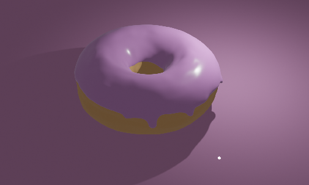
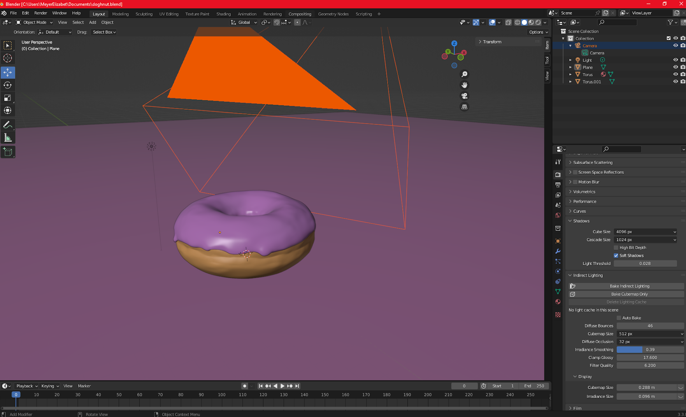

While learning Blender, I followed the classic beginner’s path of
creating a doughnut! These images showcase my progression as I
explored 3D modeling, texturing, and lighting. Starting with a simple
torus shape, I sculpted the dough-like base and added a glossy,
dripping icing effect. I experimented with shading and materials to
make the surface more realistic, adjusting the lighting to enhance
depth and highlights. Each iteration brought improvements in realism,
reflections, and overall presentation. This project was a fun and
essential step in getting comfortable with Blender’s tools and
workflow!